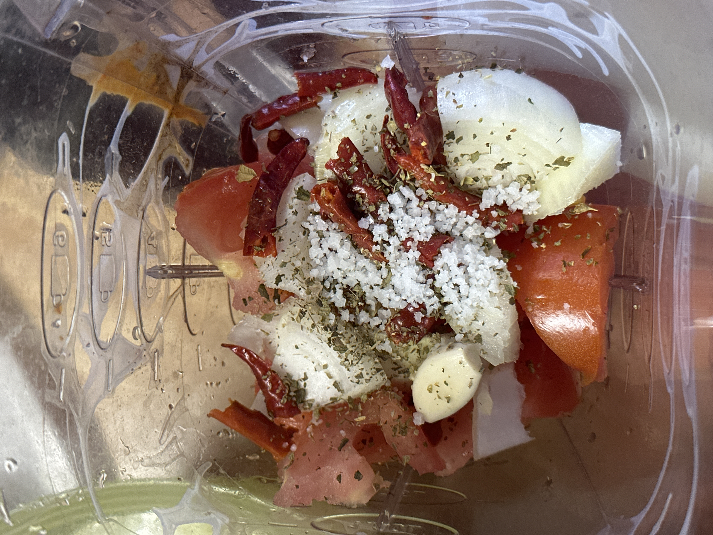

Salsa de Jerez
This salsa originated in Jerez, Zacatecas and it can be found being sold by street vendors in most corners of that city.
Ingredients
- Tomato
- Onion
- Mexican chile de árbol
- 1 garlic clove
- Oregano
- Salt

Directions
- Place all the ingredients inside blender and blend to preferred consistance
This dish is to be served with fried tortilla chips, tostadas, or chicharrones.